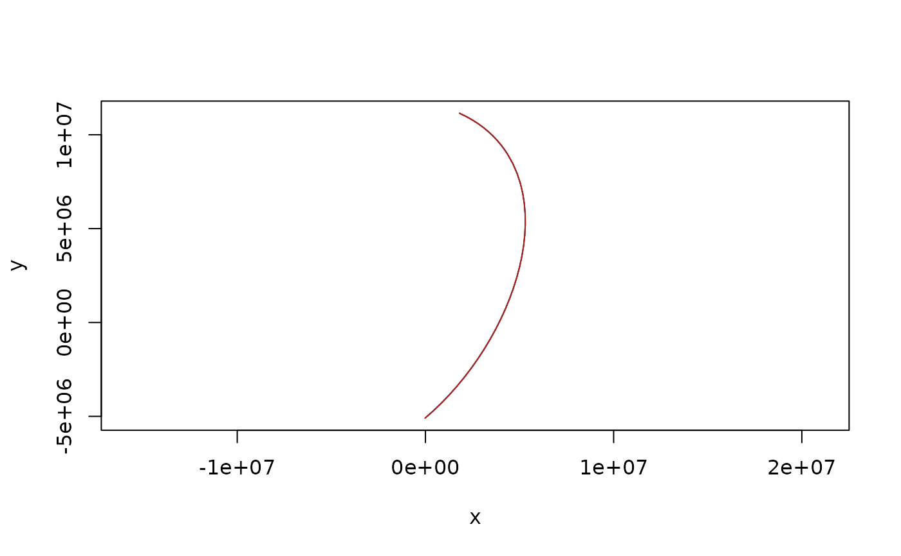

Insert vertices along great circle arcs exactly where a target projection
bends them, so that straight chords drawn between output vertices stay
within tolerance of the true projected curve. This is the adaptive
resampling scheme of d3-geo (Bostock), generalized to paths and to
segment meshes.
Usage
densify(
x,
target,
source = NULL,
tolerance = NULL,
pixels = 2048L,
max_depth = 16L,
ellipsoid = FALSE
)Arguments
- x
a two-column matrix of lon,lat (a path), a list of such matrices, a segment mesh (a list with
vb, a 4 x n vertex matrix with rows x, y, z, h, andis, a 2 x m segment index matrix, 1-based, as used by rgl's mesh3d), or awkpoolvertex-pool topology from the wkpool package (any wk-handleable geometry viawkpool::establish_topology()); pools carrying z or m vertex values are refused, as densification cannot invent them at new vertices- target
projection for which to densify (proj string, WKT, authority code - anything PROJ accepts)
- source
coordinate system of the input. If
NULL(the default) it is taken from awkpoolinput's own crs when it has one, and otherwise is 'EPSG:4326' (longitude, latitude); authority codes are axis-normalized so 'EPSG:4326' input is still given as lon,lat- tolerance
maximum allowed deviation, in units of
target(usually metres); ifNULL(the default) it is derived from the larger side of the projected extent of the input asmax(diff(range))/pixels- pixels
notional output width/height used to derive the default
tolerance, i.e. "keep error under about one part inpixelsof the plot"; ignored whentoleranceis supplied- max_depth
maximum bisection depth per input segment (each level at most doubles the vertex count of a segment)
- ellipsoid
if
TRUE, new vertices are placed on the WGS84 geodesic instead of the great circle, using the 'geographiclib' package (which must be installed). The sphere still decides how many vertices each edge gets and at what fraction along it; each one is then moved to the same fraction of the geodesic between the same two endpoints. Input vertices are unchanged, shared edges still get identical vertices, and the input must be longitude, latitude. On long edges the two differ by tens of kilometres (about 23 km at most from Hobart to London)
Value
the same kind of object as x, with vertices added: a matrix
for a path, a list of matrices for a list, a mesh with appended
vertices and refined is for a mesh, a wkpool with appended
vertices (freshly minted .vx ids), refined directed segments, and
.feature provenance carried onto every refined segment
Details
The error metric is evaluated in the plane of the target projection:
the great circle midpoint of each candidate segment is forward-projected
and compared to the segment's planar chord (perpendicular distance, plus
a parametric check that catches strong shear). Segments are split
recursively until they pass or max_depth is reached. No inverse
transforms are used and each point is projected exactly once.
Coordinates are returned in the coordinates of source (geographic by
default): project the result yourself for plotting, e.g. with
rproj_xy() for a matrix or, for wk geometry (such as
wkpool::segments_to_wkb() of a refined pool), with wk::wk_transform()
and a PROJ::proj_trans_create() transform.
Points that cannot be projected (for example beyond the horizon of an orthographic projection) do not error: segments touching them are left un-densified, and refinement stops at unprojectable midpoints. Clipping is out of scope here.
Inserted vertices are emitted in the longitude frame of their input
edge: an edge along longitude 180 refines at 180, its mirror at -180
refines at -180 (the two seams of a global layer remain distinct), and
an edge written as crossing the antimeridian yields a locally
continuous chain, possibly outside [-180, 180). Input vertices are
always returned with their written values, so a crossing edge's path
carries one numeric 360-degree step at its far endpoint (the same
point on the sphere; PROJ is indifferent). Longitudes are never
canonicalized; normalize afterwards if a canonical range is needed.
Edges that cross the target projection's own discontinuity (which
depends on lon_0) cannot form a valid planar chain and should be cut
beforehand; refinement of such edges is bounded, not exploded, because
arcs spanning less ground than tolerance are never split.
Every edge is a great circle arc on a sphere, the same reading of an edge that 's2' uses. Data whose edges are meant as straight lines in longitude and latitude describe a different shape, and densifying them here changes it.
Shared edges stay shared. An edge refines to the same vertices whichever
way it is written, bit for bit, so two neighbouring polygons get
identical new vertices along their common boundary (and
wkpool::merge_coincident() fuses them). An edge that appears twice with
the same vertices, as in a merged pool or a segment mesh, is refined
once and its new vertices are reused.
Examples
s <- segment(c(140, -164), c(-89, 80))
d <- densify(s, "+proj=laea +lon_0=147 +lat_0=-42")
nrow(d)
#> [1] 38
plot(rproj_xy(d, "+proj=laea +lon_0=147 +lat_0=-42"), type = "l", asp = 1)
## on the WGS84 ellipsoid rather than the sphere
if (requireNamespace("geographiclib", quietly = TRUE)) {
e <- densify(d[c(1, nrow(d)), ], "+proj=laea +lon_0=147 +lat_0=-42",
ellipsoid = TRUE)
lines(rproj_xy(e, "+proj=laea +lon_0=147 +lat_0=-42"), col = "firebrick")
}
